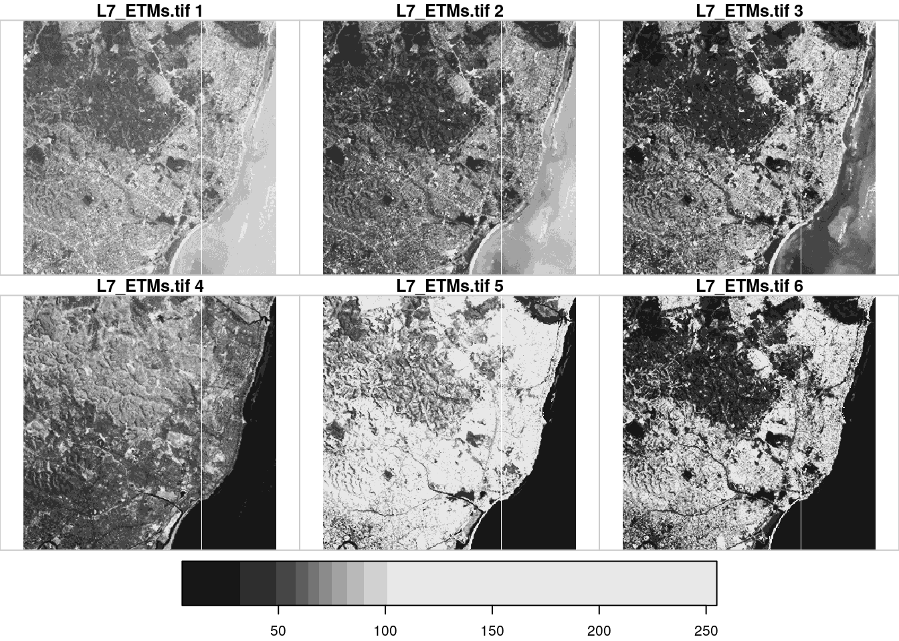

Chapter 4 Raster data and datacubes
4.1 Package stars
#> Warning in citation(pkg, auto = if (pkg == "base") NULL else TRUE): no date
#> field in DESCRIPTION file of package 'stars'
#> Warning in citation(pkg, auto = if (pkg == "base") NULL else TRUE): could
#> not determine year for 'stars' from package DESCRIPTION fileAthough package sp has always had limited support for raster data, over the last decade R package raster has clearly been dominant as the prime package for meaningful and scalable raster analysis. Its data model is that of a 2D raster, or a set of raster layers (a “raster stack”). This follows the classical static GIS world view, where the world is modelled as a set of layers, each representing a different theme. A lot of data available Today however is dymic, and comes as time series of rasters for different themes. A raster stack does not meaningfully reflect this, requiring the user to do shadow book keeping of which layer represents what. Also, the raster package does an excellent job in scaling computations up to datasizes no larger than the local storage (the computer’s hard drives). Recent datasets however, including satellite imagery, climate model or wheather forecasting data, often no longer fit in local storage. Package spacetime addresses the analysis of time series of vector geometries or raster grid cells, but does not extend to higher-dimensional arrays.
Here, we introduce a new package for raster analysis, called stars (for scalable, spatiotemporal tidy arrays) that
- allows for representing dynamic raster stacks,
- addition to regular grids handles rotated, sheared, rectilinear and curvilinear rasters,
- provides a tight integration with package
sf, - follows the tidyverse design principles,
- aims at being scalable, also beyond local disk size,
- handles array data with non-raster spatial dimensions, called vector datacubes,
- provides further integration with the GDAL library than other R packages have given so far.
Vector data cubes include for instance time series for simple features, or spatial graph data such as origin-destination matrices, the wider concept of data cubes is explained in section 4.3
4.2 Raster data
As introduced in section 3.3, raster data are spatial datasets where observations are aligned on a regular grid usually with square grid cells. Raster datasets are used often to represent spatially continuously varying phenomena such as temperature or elevation, and also for observed imagery for instance obtained from satellites.
4.2.1 Reading and writing raster data
Raster data typically are read from a file. We read an example file of a regular, non-rotated grid from the package stars:
tif = system.file("tif/L7_ETMs.tif", package = "stars")
x = read_stars(tif)The dataset contains (a section of) a Landsat 7 scene, with the 6 30m-resolution bands (bands 1-5 and 7) for a region covering the city of Olinda, Brazil. A short summary of the data is given by
x
#> stars object with 3 dimensions and 1 attribute
#> attribute(s):
#> L7_ETMs.tif
#> Min. : 1.0
#> 1st Qu.: 54.0
#> Median : 69.0
#> Mean : 68.9
#> 3rd Qu.: 86.0
#> Max. :255.0
#> dimension(s):
#> from to offset delta refsys point values
#> x 1 349 288776 28.5 +proj=utm +zone=25 +south... FALSE NULL [x]
#> y 1 352 9120761 -28.5 +proj=utm +zone=25 +south... FALSE NULL [y]
#> band 1 6 NA NA NA NA NULLwhere we see the offset, cellsize, coordinate reference system, and dimensions. The object x is a simple list of length one, holding a three-dimensional array:
length(x)
#> [1] 1
class(x[[1]])
#> [1] "array"
dim(x[[1]])
#> x y band
#> 349 352 6and in addition holds an attribute with a dimensions table with all the metadata required to know what the array values refer to, obtained by
st_dimensions(x)
#> from to offset delta refsys point values
#> x 1 349 288776 28.5 +proj=utm +zone=25 +south... FALSE NULL [x]
#> y 1 352 9120761 -28.5 +proj=utm +zone=25 +south... FALSE NULL [y]
#> band 1 6 NA NA NA NA NULLWe can get the spatial extent of the array by
st_bbox(x)
#> xmin ymin xmax ymax
#> 288776 9110729 298723 9120761Raster data can be written to local disk using st_write:
st_write(x, "x.tif")where the format (in this case, GeoTIFF) is derived from the file extension. As for simple features, reading and writing uses the GDAL library; the list of available drivers for raster data is obtained by
st_drivers("raster")4.2.2 Plotting raster data
We can use the base plot method for stars objects:
plot(x) The default color scale uses grey tones, and stretches this such that color breaks correspond to data quantiles over all bands. A more familiar view is the rgb or false color composite:
The default color scale uses grey tones, and stretches this such that color breaks correspond to data quantiles over all bands. A more familiar view is the rgb or false color composite:
par(mfrow = c(1, 2))
plot(x, rgb = c(3,2,1), reset = FALSE, main = "RGB") # rgb
plot(x, rgb = c(4,3,2), main = "False color (NIR-R-G)") # false color
4.2.3 Analysing raster data
Element-wise mathematical operations on stars objects are just passed on to the arrays. This means that we can call functions and create expressions:
log(x)
#> stars object with 3 dimensions and 1 attribute
#> attribute(s):
#> L7_ETMs.tif
#> Min. :0.00
#> 1st Qu.:3.99
#> Median :4.23
#> Mean :4.12
#> 3rd Qu.:4.45
#> Max. :5.54
#> dimension(s):
#> from to offset delta refsys point values
#> x 1 349 288776 28.5 +proj=utm +zone=25 +south... FALSE NULL [x]
#> y 1 352 9120761 -28.5 +proj=utm +zone=25 +south... FALSE NULL [y]
#> band 1 6 NA NA NA NA NULL
x + 2 * log(x)
#> stars object with 3 dimensions and 1 attribute
#> attribute(s):
#> L7_ETMs.tif
#> Min. : 1.0
#> 1st Qu.: 62.0
#> Median : 77.5
#> Mean : 77.1
#> 3rd Qu.: 94.9
#> Max. :266.1
#> dimension(s):
#> from to offset delta refsys point values
#> x 1 349 288776 28.5 +proj=utm +zone=25 +south... FALSE NULL [x]
#> y 1 352 9120761 -28.5 +proj=utm +zone=25 +south... FALSE NULL [y]
#> band 1 6 NA NA NA NA NULLor even mask out certain values:
x2 = x
x2[x < 50] = NA
x2
#> stars object with 3 dimensions and 1 attribute
#> attribute(s):
#> L7_ETMs.tif
#> Min. : 50
#> 1st Qu.: 64
#> Median : 75
#> Mean : 79
#> 3rd Qu.: 90
#> Max. :255
#> NA's :149170
#> dimension(s):
#> from to offset delta refsys point values
#> x 1 349 288776 28.5 +proj=utm +zone=25 +south... FALSE NULL [x]
#> y 1 352 9120761 -28.5 +proj=utm +zone=25 +south... FALSE NULL [y]
#> band 1 6 NA NA NA NA NULLor un-mask areas:
x2[is.na(x2)] = 0
x2
#> stars object with 3 dimensions and 1 attribute
#> attribute(s):
#> L7_ETMs.tif
#> Min. : 0
#> 1st Qu.: 54
#> Median : 69
#> Mean : 63
#> 3rd Qu.: 86
#> Max. :255
#> dimension(s):
#> from to offset delta refsys point values
#> x 1 349 288776 28.5 +proj=utm +zone=25 +south... FALSE NULL [x]
#> y 1 352 9120761 -28.5 +proj=utm +zone=25 +south... FALSE NULL [y]
#> band 1 6 NA NA NA NA NULLDimension-wise, we can apply functions to array dimensions of stars objects just like apply does this to matrices. For instance, to compute for each pixel the mean of the 6 band values we can do
st_apply(x, c("x", "y"), mean)
#> stars object with 2 dimensions and 1 attribute
#> attribute(s):
#> L7_ETMs.tif
#> Min. : 25.5
#> 1st Qu.: 53.3
#> Median : 68.3
#> Mean : 68.9
#> 3rd Qu.: 82.0
#> Max. :255.0
#> dimension(s):
#> from to offset delta refsys point values
#> x 1 349 288776 28.5 +proj=utm +zone=25 +south... FALSE NULL [x]
#> y 1 352 9120761 -28.5 +proj=utm +zone=25 +south... FALSE NULL [y]A more meaningful function would e.g. compute the NDVI (normalized differenced vegetation index):
ndvi = function(x) (x[4]-x[3])/(x[4]+x[3])
st_apply(x, c("x", "y"), ndvi)
#> stars object with 2 dimensions and 1 attribute
#> attribute(s):
#> L7_ETMs.tif
#> Min. :-0.753
#> 1st Qu.:-0.203
#> Median :-0.069
#> Mean :-0.064
#> 3rd Qu.: 0.187
#> Max. : 0.587
#> dimension(s):
#> from to offset delta refsys point values
#> x 1 349 288776 28.5 +proj=utm +zone=25 +south... FALSE NULL [x]
#> y 1 352 9120761 -28.5 +proj=utm +zone=25 +south... FALSE NULL [y]Alternatively, to compute for each band the mean of the whole image we can do
as.data.frame(st_apply(x, c("band"), mean))
#> band L7_ETMs.tif
#> 1 1 79.1
#> 2 2 67.6
#> 3 3 64.4
#> 4 4 59.2
#> 5 5 83.2
#> 6 6 60.0which is so small it can be printed here as a data.frame. In these two examples, entire dimensions disappear. Sometimes, this does not happen; we can for instance compute the three quartiles of each image
st_apply(x, c("band"), quantile, c(.25, .5, .75))
#> stars object with 2 dimensions and 1 attribute
#> attribute(s):
#> L7_ETMs.tif
#> Min. : 32.0
#> 1st Qu.: 60.8
#> Median : 66.5
#> Mean : 69.8
#> 3rd Qu.: 78.8
#> Max. :112.0
#> dimension(s):
#> from to offset delta refsys point values
#> quantile 1 3 NA NA NA NA 25%, ..., 75%
#> band 1 6 NA NA NA NA NULLand see that this creates a new dimension, quantile, with three values. Alternatively, the three quantiles over the 6 bands for each pixel are obtained by
st_apply(x, c("x", "y"), quantile, c(.25, .5, .75))
#> stars object with 3 dimensions and 1 attribute
#> attribute(s):
#> L7_ETMs.tif
#> Min. : 4.0
#> 1st Qu.: 55.0
#> Median : 69.2
#> Mean : 67.2
#> 3rd Qu.: 81.2
#> Max. :255.0
#> dimension(s):
#> from to offset delta refsys point
#> quantile 1 3 NA NA NA NA
#> x 1 349 288776 28.5 +proj=utm +zone=25 +south... FALSE
#> y 1 352 9120761 -28.5 +proj=utm +zone=25 +south... FALSE
#> values
#> quantile 25%, ..., 75%
#> x NULL [x]
#> y NULL [y]4.2.4 Handling large raster datasets
A common challenge with raster datasets is not only that they come in large files (single Sentinel-2 tiles are around 1 Gb), but that many of these files, potentially thousands, are needed to address the area of interest and/or the time period of interest. This means that the basic pattern for R, to load all data in memory, is not going to work.
Cloud-based Earth Observation processing platforms like Google Earth Engine (Gorelick et al. 2017) or Sentinel Hub lets users work with datasets up to 20 petabyte rather easily and with a great deal of interactivity. They share the following properties:
- computations are posponed as long as possible (lazy evaluation),
- only the data you ask for are being returned, and nothing more,
- storing intermediate results is avoided in favour of on-the-fly computations,
- when working interactively, maps with useful results are generated and shown quickly.
This carries some similarity with the dbplyr interface to databases and cloud-based analytics environments, but differs in the aspect of what we want to see quickly: not the first \(n\) records, but a quick overview of the results, in the form of a map covering the whole area.
If for instance we want to “see” results for the United States on screen with 1000 x 1000 pixels, we only need to compute results for this many pixels, which corresponds to data on a grid with 3000 m x 3000 m grid cells. If our Sentinel-2 data has a 10 m resolution, this means we can subsample this at a with a factor 300, giving 3 km x 3 km resolution. Processing, storage and network requirements then drop a factor \(10^5\), compared to working on the native 10 m x 10 m resolution. On the platforms mentioned, zooming in the map causes immediate recomputation on a finer resolution and smaller extent.
A simple optimisation that follows these lines is how stars’ plot method works: in case of plotting large rasters, it subsamples the array before it plots, drastically saving time. The degree of subsampling is derived from the plotting region size and the plotting resolution (pixel density). For vector devices, such as pdf, R sets plot resolution to 75 dpi, or 0.3 mm per pixel. Enlarging plots may reveal this, but replotting to an enlarged devices will create a plot at target density.
4.2.5 stars proxy objects
To handle datasets that are too large to handle in memory, stars has the stars_proxy object. The starsdata packages is a largish R data package with example data that can be installed by
install.packages("starsdata", repos = "http://pebesma.staff.ifgi.de", type = "source")We can “load” a 1 Gb Sentinel-2 image by
granule = system.file("sentinel/S2A_MSIL1C_20180220T105051_N0206_R051_T32ULE_20180221T134037.zip", package = "starsdata")
base_name = strsplit(basename(granule), ".zip")[[1]]
s2 = paste0("SENTINEL2_L1C:/vsizip/", granule, "/", base_name, ".SAFE/MTD_MSIL1C.xml:10m:EPSG_32632")
(p = read_stars(s2, proxy = TRUE))
#> stars_proxy object with 1 attribute in file:
#> $`MTD_MSIL1C.xml:10m:EPSG_32632`
#> [1] "SENTINEL2_L1C:/vsizip//home/edzer/R/x86_64-pc-linux-gnu-library/3.5/starsdata/sentinel/S2A_MSIL1C_20180220T105051_N0206_R051_T32ULE_20180221T134037.zip/S2A_MSIL1C_20180220T105051_N0206_R051_T32ULE_20180221T134037.SAFE/MTD_MSIL1C.xml:10m:EPSG_32632"
#>
#> dimension(s):
#> from to offset delta refsys point values
#> x 1 10980 3e+05 10 +proj=utm +zone=32 +datum... NA NULL [x]
#> y 1 10980 6e+06 -10 +proj=utm +zone=32 +datum... NA NULL [y]
#> band 1 4 NA NA NA NA NULLand we see that this does not actually load any of the pixel values, but keeps the reference to the dataset and fills the dimensions table.
When we plot it,
plot(p) the
the plot method will only fetch the pixels that can be seen on the plot device, rather than the 10980 x 10980 pixels that are available.
4.2.6 operations on proxy objects
4.3 Datacubes
Data cubes are array data, where array dimensions are meaningfully related to categorical or continuous variables that may include space and time. A simple example would be demographic data, where we have population counts
- per region, for \(n\) regions
- by age class, for \(m\) age classes
- per year, for \(p\) years.
This forms an array of size \(n \cdot m \cdot p\). R has strong native support for arbitrarily dimensioned arrays, and we can get the value for year \(i\), age class \(j\) and year \(k\) by
a[i,j,k]and the sub-array for age class \(j\) by
a[,j,]4.3.1 The flexibility of datacubes
Give examples; see stars/tests/?
4.3.2 Are datacubes tidy?
Yes. The tidy data paper (Wickham 2014b) may suggest that such array data should be processed not as an array, but in a long data.frame where each row holds (region, class, year, value), and it is always good to be able to do this. For primary handling and storage however, this is often not an option, because
- a lot of array data are collected or generated as array data, e.g. by imagery or other sensory devices, or e.g. by climate models
- it is easier to derive the long table form from the array than vice versa
- the long table form takes much more space, since all dimension values occur \(nmp\) times, rather than \(n\), \(m\) or \(p\) times
- the automatic index of the array is typically lost in the long table form
To put this argument to the extreme, consider for instance that all image, video and sound data are stored in array form; few people would make a real case for storing them in a long table form instead.
4.3.3 Spatial, spatiotemporal and raster datacubes: stars
Matrices (two-dimensional arrays) and arrays form a very well understood and strongly supported element in scientific computing, and in R. Package stars builds upon them, but adds strong connections between spatial and temporal dimensions to other R infrastructure for space and time.
Package stars follows the tidy manifesto to handle array sets, and has particularly developed support for the case where one or more of the dimensions refer to space, and/or time. They somewhat resemble the tbl_cube structure found in dplyr, which labels array dimensions, but extends this with
- array dimensions referring to spatial geometries, including points, lines, polygons and rasters
- array dimensions referring to time values and time intervals
- support for spatial coordinate reference systems
- support for measurement units of array values
- support for out-of-memory handling of large datasets
References
Gorelick, Noel, Matt Hancher, Mike Dixon, Simon Ilyushchenko, David Thau, and Rebecca Moore. 2017. “Google Earth Engine: Planetary-Scale Geospatial Analysis for Everyone.” Remote Sensing of Environment 202: 18–27. doi:https://doi.org/10.1016/j.rse.2017.06.031.
Wickham, Hadley. 2014b. “Tidy Data.” Journal of Statistical Software 59 (1).